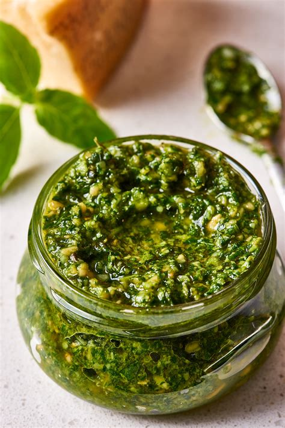

Pesto recipe

Recipe description
Traditional basil pesto is made from fresh basil, garlic, pine nuts, extra-virgin olive oil, and Parmesan cheese, blended together in a food processor. It takes about 10 minutes to make, and you can use it on pasta, salads, roasted veggies, or sandwiches..
Steps to Prepare Pesto
- Prepare Ingredients: Gather all ingredients and a food processor.
-
Blend Nuts and Garlic: Pulse the pine nuts, garlic, and a pinch of salt in the food processor until finely chopped.
- Add Basil: Add the fresh basil leaves and pulse again until mixed.
-
Incorporate Olive Oil: With the processor running, slowly drizzle in the olive oil until the mixture is smooth.
-
Mix in Parmesan: Add the grated Parmesan cheese and pulse briefly to combine.
-
Taste and Adjust: Taste the pesto and adjust seasoning with more salt if needed.
Ingridients
-
Fresh basil 2 cups (packed)
-
Garlic 1-2 cloves
-
Pine nuts ½ cup
-
Extra-virgin olive oil ½ cup
-
Parmesan cheese ½ cup (grated)
-
Salt To taste
Home